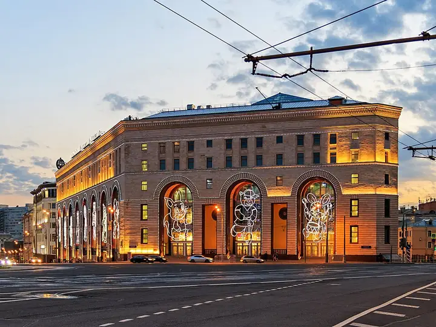

Фото: A.Savin, CC BY-SA 3.0 · Wikimedia Commons
VR-арена · ЦАО
Anvio VR
Командные VR-игры: перестрелки, зомби, квесты в виртуальной реальности.
- ₽₽ · 1 500–3 000 ₽ на человека
- в 2 планах
Позвать сюда: Anvio VRОткрыть в каталоге: Anvio VRМаршрут до места: Anvio VR
Адрес и детали
- Адрес
- Театральный пр., 5/1 (ЦДМ, 5 этаж)
Открыть на Яндекс Картах (в новой вкладке) - Метро
- м. Лубянка
- Округ
- Центр (ЦАО)
- Цена
- 1 500–3 000 ₽ на человека
- Часы работы
- пн–чт 10:00–22:00; пт, сб 10:00–23:00; вс 10:00–22:00 · проверили в октябре 2026
- Телефон
- +7 (499) 116-65-62
Планы с этим местом 2
- WINSTRIKE Arena · Компьютерный клуб · киберарена · м. Лубянка
- 1 минута пешкомAnvio VR · VR-арена
WINSTRIKE Arena и Anvio VR — в одном здании на Лубянке: сначала катка за ПК, потом рубилово в шлемах.
Открыть план: Киберарена и VR в одном домеПозвать сюда: Киберарена и VR в одном доме
Фото: A.Savin, CC BY-SA 3.0 · Wikimedia Commons
- Anvio VR · VR-арена · м. Лубянка
- 12 минут пешкомЛига Пап · Спорт-бар
Командная VR-заруба, а потом спорт-бар на трибуне.
Открыть план: VR-рубилово и матчПозвать сюда: VR-рубилово и матч
Фото: A.Savin, CC BY-SA 3.0 · Wikimedia Commons

Похожие рядом


Что ещё рядом
Как позвать
- Выбери план, место или событие — в карточке адрес, цены и маршрут в Яндекс Картах.
- Нажми «Позвать сюда» — соберётся приглашение-игра для свидания или голосование для компании.
- Отправь ссылку в любой мессенджер: тебе ответят, а компания отметит, куда и когда может. Бесплатно и без регистрации.